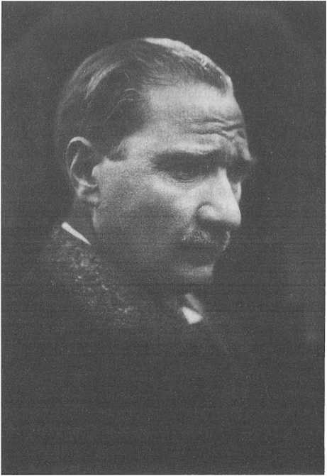
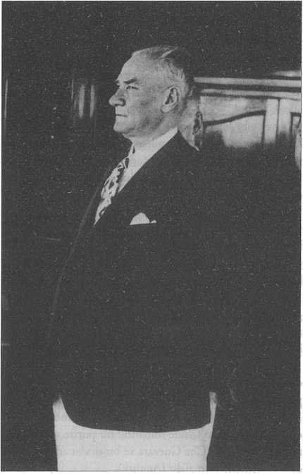

Dünya’da Atatürk
Bu konunun ve başlığın çok iyi araştırıldığı kanaatinde değilim. Mesela başta Lloyd George’a daha sonra ise Churchill’e atfedilen “100 yılda bir, bir dâhi gelir; Küçük Asya’dan çıkacağını ben nereden bilirdim?" sözü hâlâ belgelendirilmemiştir. Bu isimlerin ikisi de başbakan olduklarından konuşmaları toplanmıştır. Bunu araştırmak o kadar da zor değildir. Bunun dışında Churchill dünyada saygın bir siyasetçi idi, dünya lideriydi, vefatından sonra hakkında söylenenler ortadadır ve başardıkları nedeniyle uluslararası alanda büyük bir saygınlığı vardı.
İngilizlerin muhafazakârı da, liberali de aslında ideal demokratik tavırdan uzaktır. Yukarıda daha ayrıntılı bahsettiğimiz gibi, 1936 Haziranı’nda Hitler’in Berchtesgaden’deki karargâhını ziyaret eden Lloyd George’un imzalı fotoğrafları basına yansımıştı. Lloyd George’un Hitler’i “dâhi, yetenekli, tanıdığı en ilginç devlet adamı" diye öven konuşmaları ortadadır. 1914 ve 1920’den itibaren karşısında ideallerimiz ve vatan için çarpıştığımız ordular kadar, 1914’te maalesef yanımızdaki orduların ideolojik niteliği ve
1920’den itibaren karşımızdaki dünya liderleri böyle adamlardır. Fakat bir arada yaşamak, İkinci Dünya Savaşı’nda barış içinde olmak, Churchill ile yakınlaşmak politikasına başlandığında, yetersiz silah yardımına rağmen Müttefiklerin yanında savaşa girmemiz isteği reddedildi. Onlarla savaşmamak akil bir davranıştır, yerindedir.

Gazi Mustafa Kemal Paşa’nın 1 Şubat tarihli Time dergisine kapak olan fotoğrafı, 1927.
Atatürk Anılarda ve Hafızada Nerede?
Milletler ve Türk milleti de büyük adamlarını kolay unutmaz. Burada belki şöyle bir sorun var, yani bir çıkıntı var: Zaman zaman belirli çevrelerde Kemalist dönemin değerlendirilmesi, yani Atatürk döneminin değerlendirilmesi babında pek de tarihî hakikate, tarihçi düşünceye uymayan ters yorumlarla bir tahfif dönemi yaşandı. Bazı olaylar abartıldı, bazıları tamamıyla uyduruldu. Mesela laiklik anlayışı nerdeyse Sovyetler Birliği’ndeki Stalinist dönemin ateist uygulamalarına paralel bir şekilde ve derecede yorumlandı. Bu yanlış ve dehşet bir düşünce sapması. Türkiye çok zor bir memlekettir. Her şeyden evvel insan unsuru çökmüştü. Bir imparatorluk parçalanmış ve imparatorluğun ana unsuru çok büyük kayıplar vermişti. Ne Balkan milletleri (ki 1912’de çıktı elimizden, onu da bir nevi Birinci Dünya Savaşı’na bağlayarak değerlendirebiliriz) ne de Orta Doğu toplumları bu kadar büyük insan kaybına uğramıştır. Münevver, zanaatkâr ve çiftçi eksiği vardı, inanılmaz hastalıklar vardı. Maalesef Küçük Asya’nın tahrip edilmiş bir yapılanması vardı. Bunu coğrafya ve sosyal değişim yaratıyordu. Bu hastalıklar literatürde sıtma, verem diye geçip gidiyor. Hâlbuki bütün açılan geleneksel toplumlarda görüldüğü gibi bir yerlerden bulaşagelen bir frengi de bu listede vardı. Bu sorunların çözülmesi söz konusuydu; sanayi, Balkanlar, Kuzey Suriye ve Çukurova’da yoğunlaşmıştı. Bunların bir kısmı elimizde kalmıştı ama asıl verimli bölgeler gitmiş, bütün Suriye-Filistin bölgesi bir anda elimizden çıkmıştı. Bu yıkımın tazmini, yerine konması gibi bir süreç yaşanmamıştı ve Balkanlar için de aynı şey geçerliydi. Demir yolu ağımızın önemli bir kısmı kıyılara paralel ve 19. asır sonunda döşenen Orta
Anadolu demir yollarıydı. Bunların Suriye kesimi tamamen elden çıkmıştı. Dolayısıyla burada bir kopukluk var. Birdenbire mamur merkezler, Anteb, Kilis gibi yerler sınır şehirleri haline gelmişti. Sınır şehri o zamanlarda ticaretin ve sanayinin tıkandığı, eridiği yer demektir. 1950’den evvel sınır şehri demek, nerede olursa olsun geriliğe mahkûmdur, fakir olur. Belirli zanaatlar ve eğitim gelişemez, var olan durur. Mesela Almanya’nın Saarbrücken’i veya Fransa’nın Alsace-Lorraine havzasının önü kapalıydı ve gelişemezdi. Öte yandan birdenbire elinize bir Kars geçiyor. Kars bizden evvel 40 yıl Çarlık Rusyası’na geçmiş, demir yollarıyla o teknoloji içinde Rusya’ya entegre olmuş; bize geldiği an kullanılamıyor, çünkü artık sınır şehriydi.
Kuşkusuz yurdun dört bucağı Akdeniz ve Karadeniz’i, Erzurum ve Edirne’yi birbirine bağlayan bir şebeke Cumhuriyet devrinin eseridir, 2815 km’lik eklenmeyle sağlandı. Elbette bu hatlar devraldığımız gibi çağdaş Avrupa teknolojisine paralel mükemmellikte değildi, ihtiyacı karşılamazdı. O devirde yoğun bir ulaşım talebini karşılayacak durumda değildi. Aslında 15 milyonluk bir ülke için çok geniş ve sık dokulu bir ağ düşünmek mümkün değildir. Türkiye bu masrafı karşılayacak durumda değildi. Ama devlet demir yolları o günden bugüne ihtiyacı karşılayacak bir yapısal değişime ve mükemmeliyete ulaşamadı. En mükemmel demir yolu genel müdürümüzün Kurtuluş Savaşı’nda bu görevi büyük başarıyla yerine getiren Albay Behiç olması (sonraki Budapeşte ve Vichy hükûmetleri nezdindeki büyükelçimiz Behiç Erkin) sonraki idari yapı için pek övünülecek bir durum olmasa gerek. 1950’den sonra sınırsız bir kara yolculuğuna geçildi. Oysa bu yetersiz kalmaya mahkûm bir şebekedir, modernleşen bir demir yolu ağıyla tamamlandığı takdirde bir anlam ifade eder. (1950-2003 arasında 943 km kadar demir yolu hattı eklenebilmiştir ki bu arada Türkiye kara yollarının ne yapılırsa yapılsın ihtiyacı karşılamayacak bir trafik sorunuyla yüz yüze geldiği malûmdur.)
Atatürk devri hakkında ezbere tarih yazılıyor, yorumlar yapılıyor. “Çiviyi çiviye mi çakmış, 1950’den sonra yapılmış..." Kimse ne 1950’den sonrasını inkâr etsin, ne Demirel devrini inkâr etsin (sanayileşme ve alt yapı açısından), ama 1930’ları da doğru değerlendirsin. Açıkçası büyük bir sağduyu da var, bugün Atatürk’ü seven, anlayan insanlar daha eğitimli. Ondan sonraki kuşaklar ve bu toplum Gazi’ye sahip çıkıyor ve daha iyi değerlendiriyor.
Atatürk, Türk tarihinin çok önemli lideridir. Bu sadece Türkiye açısından değildir. Mesela Türkî cumhuriyetlerin tarihi için de bu böyledir. O dönemin Sovyetler’inde yerel komünist partilerde Atatürk ismi saygıyla anılan bir liderdi. Bizde böyle Atatürkçü ya da anti Atatürkçü birtakım dalgalar olmasına rağmen, oralarda üzerinde çok birleşilen bir portreydi.
Tarihin akışını değiştiren, ona mührünü vuran veya büyük tehlikelere mâni olan liderler her memlekette çıkmazlar. Dolayısıyla Türkiye’ninki de az olacaktır. Nitekim Türklerin büyük mareşalleri, büyük devlet adamları her asırda vardı. Fakat Atatürk dünya tarihinin de nadiren gördüğü bütünleyici bir yönetici, bir dehadır.
Bugün halen özlemle anılıyorsa ve gönülden seviliyorsa bu, beyhude değildir...
20. Yüzyılda Atatürk
20. yüzyılın sonunda Sovyetler Birliği ve ona bağlı Doğu Avrupa’da sosyalist rejim âdeta göz açıp kapayıncaya kadar iflas etti. İlk safha Doğu Almanlarının kendi pasaportlarıyla Çekoslovakya ve Macaristan üzerinden Yugoslavya ve Avusturya yoluyla Almanya ve nihayet kitleler halinde Berlin’e geçmeleri ile oldu. Bu kitlevî bir geçişti, ardından da Berlin Duvarı delindi. Bu vakte kadar Sovyetler Birliği sinyali vermişti. Bugünkü manzaraya baktığımız zaman şunu görüyoruz: Sovyet Rusya sosyalizmi terk etmiş, âdeta kapitalizmden kapitalizme geçişin en zor ve ıstıraplı yolunu tercih etmiş sayılıyordu.
Gelen kapitalizm amansızdır; çalışan kitlelerin ve halkın hayatında çok büyük sarsıntılar yaratmıştır. 1917’nin sonunda yeni Sovyet Rusya fevkalade büyük bir harabe devralmıştı. Halkın % 90’a yakını okuryazar değildi, büyük bir adaletsizlik vardı, sanayi 19. yüzyılın son çeyreğinde gösterdiği gelişmelere rağmen hâlâ bütün Avrupa’nın gerisindeydi. Belki ellerinde endüstriyel cemiyet adına kullanabilecekleri tek şey demir yollarıydı.
Hiç şüphesiz ki Lenin’in NEP politikasıyla harbden sonraki iktisadi seviyeye yaklaşabilecek bir özel teşebbüs dönemi yaşadılar. Ama ardından da 1926’dan itibaren bu rejime son verildi ve Stalinist döneme girildi.
Stalinizm Sovyetler Birliği’nin bağımsızlığını koruduğu bir devirdir. Şurası açıktır ki Sovyet Rusya, Batı’da III. Reich Almanyası gibi bir kuvvetin büyümesi ve yayılmasını önlemiş, böyle bir dönemi ebediyen kapatmıştır. Halkı sanayi cemiyetinin şartlarına hazırlamıştır, eğitimi geliştirmiştir, nitelikli olmasa da sağlık hizmetlerini yaymıştır. Sovyetler Birliği, atom gücünü Rusya’ya sokmuştur, uzay teknolojisinde gelişmeler sağlamıştır ama güneyli normal bir İtalyan küçük burjuvazisinin hayat seviyesine ulaşmak için bile Sovyetler Birliği’nin Kruşçev devrini beklemesi icap etmiştir ve çok açıktır ki bir de Afganistan macerası ve Afrika’daki etkinlikler gibi yayılmacılık bu ekonomiyi çökertmiştir. Çünkü sosyalizmin tahammül edemeyeceği alan silahlanma harcamalarıdır.
Dolayısıyla yıkılan sosyalizmin ardından ortada kalan enkaz ve miras hiçbir şekilde bu yeni döneme, bu 70 yıllık döneme romantik gözlerle bakılmasını sağlamıyor. Fakat şurası bir gerçektir ki Sovyet komünizmi çökerken, onun yanında Çin kendine özgü bir dejenerasyona girdi ve süratle kapitalizme yöneldi. Çinli işçi sınıfını sadece köle gibi çalıştıran değil dış sermayeye köle gibi satan bir komünist rejime dönüştü. Çin komünizmi yabancı sermayeye kitleleri âdeta ucuz fiyata kiralamaktadır. Çin’de tarihte sefalet yok demek değil, fakat ilk defadır ki işçi sınıfının üyeleri bu sefalet ve düşük ücretler yüzünden fabrikalara kapalı, köle gibi çalışan insanlar olarak intihara kadar gidiyorlar. Çin ve Sovyet Rusya sistemi birlikte bu şekilde çökünce dünyada galiba bir tek romantik sosyalist ülke kaldı, o da Küba. Kuzey Kore’nin ise ne yapacağı ve ne olacağı belli değil. Ne yapmakla ne olmak arasındaki kararı veya tarihin nasıl bir seçim yapacağını merakla ve endişeyle bekliyoruz.
Fakat dünyada sosyalist düşünce ve sosyalizm gerçeği kalkmış değil, daha doğrusu sosyalizmi yaratacak şartlar kalkmış değildir. 1960’lardaki penbe ufuklara rağmen gıda meselesinin halledilmediği, yerkürenin gittikçe açlığa mahkûm olduğu, üstelik insanları sınıf ve millet ayırt etmeksizin ölüme götürecek bir çevre kirlenmesinin olduğu açıktır. Bazı çok acı dilli jeologlar ve fizikçilerin iddiası şudur ki yakın gelecekte dünya Venüs gezegenine dönüşecek, delinen ozon tabakası asit bulutları yaratacak ve asit yağmurlarıyla mahvolan bir kıtada daha önce öngörülen kötü manzara, yani şimdiye kadar ki fareler ve trilobitlerden başka bir mahlûkun yaşamayacağı öngörüsü dahi bir efsane olarak kalacak.

Atatürk Savarona yatından İstanbul’u izliyor, bu son fotoğraflarından biridir. O yatta 56 gün kaldı ve sonra
Dolmabahçe Sarayı’na yerleşti, 1 Haziran 1938.
İsveç gibi çok eski sosyal demokrat iddialı ülkelerde bile bütün ekonomiyi 8 büyük aile yönetiyor. Avusturya ki, 80 yıllık Austro-Marksist (Austromarxism) ülkede hâlâ üniversiteyi ve belirli müesseseleri âdeta İmparator Franz Joseph’in dönemindeki aristokratik kalıplar biçimlendirmektedir.
Daha enteresanı, bugünkü dünya, yani sözde köleliğin mahkûm edildiği dünya Suriye’nin, Orta Doğu’nun veya başka Afrika ülkelerinin göçmenlerinden çocuk denecek yaştaki genç insanları köle ticaretine konu etmektedir ki bu utanılacak bir gelişmedir.
Bütün bu şartlarda sosyalizmin 20. yüzyılda vaad ettiği görevleri yerine getirmediği açıktır. Nitekim bu konuda Avrupa başka bir modaya geri dönmektedir. Troçkizm eski komünist çevrelerde yaygınlaşmaktadır.
20. yüzyılın bütün liderleri iflas eden portreler haline dönüşmektedir. Bunların fonksiyonları kalkmıştır, tarihî portreler haline dönüşmüşlerdir. Fonksiyonları kalkmayan, halen bir sosyal protestonun, bir adalet talebinin sembolü olarak yaşayanların içinde romantik bir portre, devleti yönetmeyen ihtilâlci Che Guevara ve bir devlet adamı vardır ki o da Mustafa Kemal’dir (Atatürk).
Kemalizm hiç şüphesiz ki 1940’lardan itibaren savaş ekonomisine giren, bürokrasinin hiçbir yatırım yapamadığı ve yönetemediği ülkede zecrî ve uyuşuk tedbirlerle idame-i hayat etmeye çalışan Türkiye’de, kendi içinde erimeye başlamıştır. Kemalizm’in kurduğu üniversiteler 1947’de CHP yönetiminden büyük darbe yemiştir. Kemalizm’in getirdiği laik müesseseler veya yıkılan müesseseler çok yanlış ve oyalayıcı bir mürailik içinde yön değiştirmiştir.
Fakat şurası bir gerçek ki Türkiye’de her buhranda Kemalizm tekrar bir umut ışığı olarak her yaştaki insan, her sınıftaki kitleler tarafından benimsenmektedir. Dolayısıyla onu canlı hale getiren Türkiye’nin geçirdiği hızlı değişim ve o değişimde zaman zaman girdiği labirentteki çıkmazlardır. Türkiye gençliği, rengini kaybeden bir tarih anlayışı içinde, bir ara Kemalist inancı terk etse de şimdi Kemalist politika ve özlemle dünyaya bakabilmektedir. Bunun biçimlenmesi ön planda ve belki de yalnız, 1930’lardaki eğitim politikası ve kültürel örgütlenme olmalıdır.
Elbette ordusu, sanayileşmesi, üniversiteleri ve akademik hayatı o dönemin ötesindedir. Ama millî eğitim gerilemektedir, temel müesseseler kendini kaybetmektedir, sayıca artış söz konusudur ama en önemlisi Türkiye’deki ideolojik ve kültürel hayat gerilemektedir. Türkiye etnik bir gerilim çıkmazına girmektedir. Bu gelişmeler de Kemalist rejimi bir yanıyla gerektirmektedir. Kuşkusuz tarihi ve liderleri değerlendirmek bu endişelerin üstünde ve dışında bir süreçtir. Türkiye bulunduğu coğrafyadaki özgün konumunu, gelişmesini ve kimlik değişimini anlamak ve korumak durumundadır.